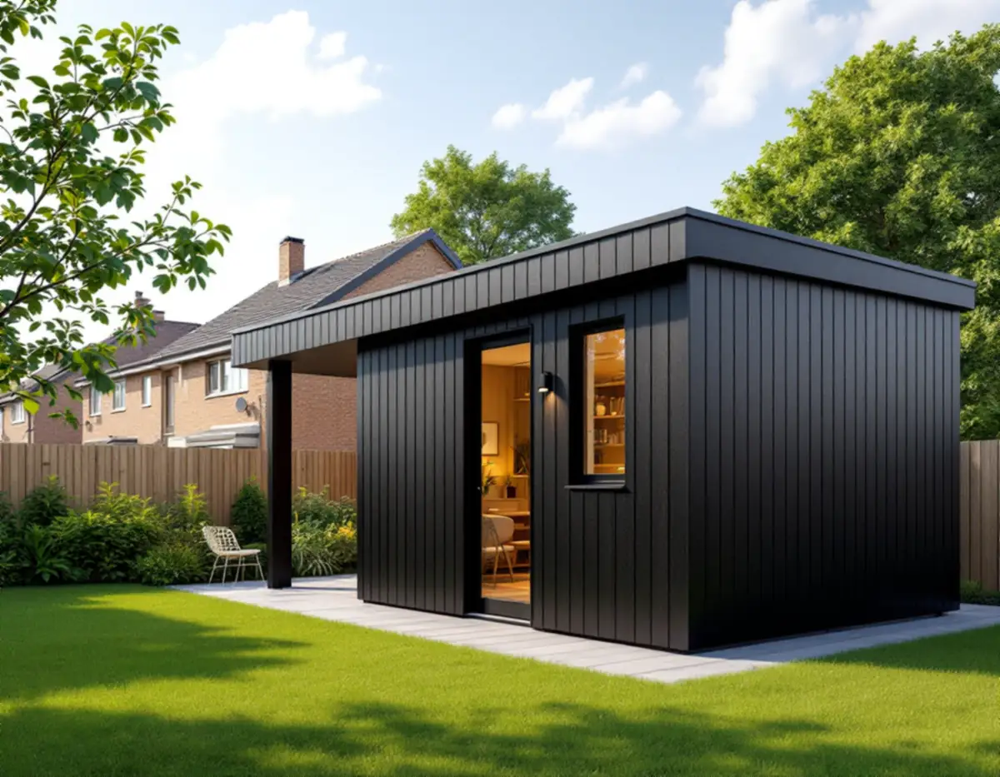
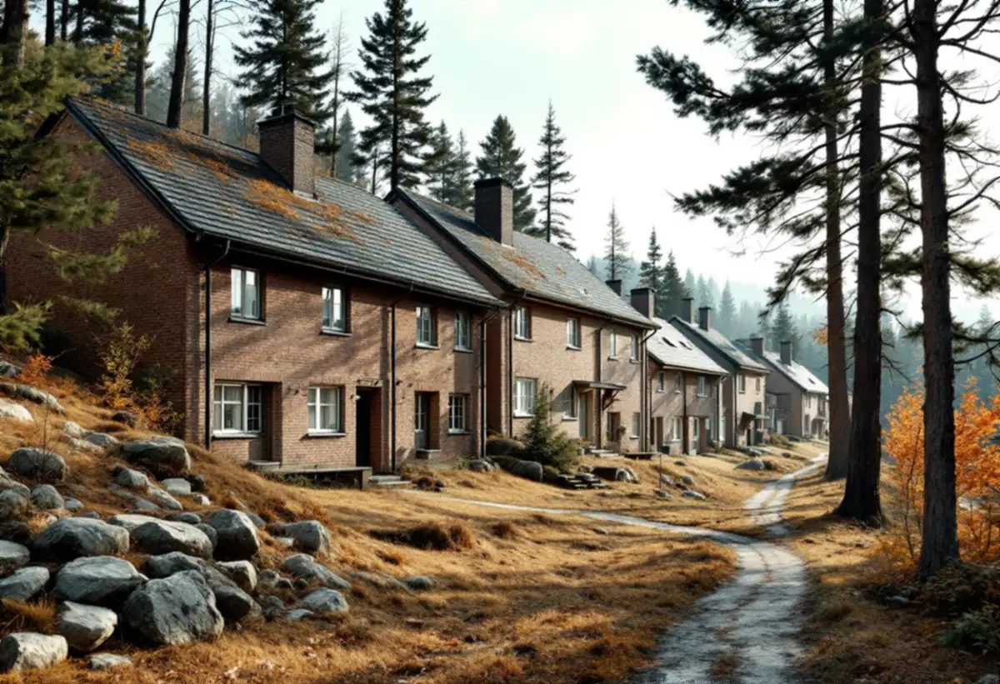
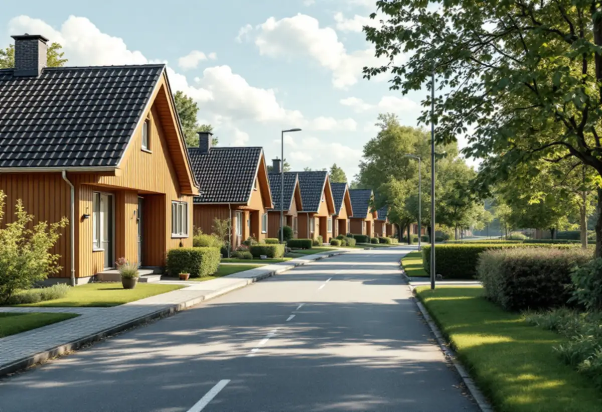

Kartan
Vi ser om tomten ligger inom riksintresset eller en värdefull miljö.
Runt Vällingby centrum ligger både ett riksintresse för kulturmiljövården och stora villa- och radhusområden. Reglerna för ett attefallshus skiljer sig därför mycket mellan grannkvarteren. Geal Entreprenad AB tar reda på vad som gäller för din tomt och bygger komplementbostadshuset nyckelfärdigt.

Enligt stadens vägledning Varsam utveckling av småhus- och villaområden var Vällingby den första tunnelbanestaden. Den invigdes 1954 och blev den stadsdel där idén om ABC-staden genomfördes mest konsekvent. Vällingby–Råcksta är utpekat som riksintresse för kulturmiljövården, och Grimsta står som kulturhistoriskt värdefull miljö.
Staden skriver att bygglov krävs för åtgärder inom ett riksintresse, som visas med en blå ring i Stadsmuseets klassificeringskarta – även när åtgärden annars är lovfri. Ligger din tomt inom ringen räknar vi därför med en bygglovsansökan för gårdshuset från början.

Vägledningen nämner flera mycket väl gestaltade radhus- och villaområden i Vällingby och pekar särskilt ut Atlantis i nordost och Omega i nordväst som kulturhistoriskt synnerligen värdefulla. Atlantis beskrivs med sin låga skala, anpassning till terrängen och sammanhållna utformning. Där är tomterna små och miljön känslig, och ett fristående gårdshus är sällan en enkel fråga.
Bor du i ett av dessa områden börjar vi med Stadsmuseets klassning och detaljplanens bestämmelser. Ibland finns det skydds- eller varsamhetsbestämmelser som styr mer än lagens mått. Vägledningen beskriver också hur tunnelbanestäderna byggdes med högre hus närmast centrum och en nedtrappning mot grupper av rad- och kedjehus längst ut, med gångvägar och naturstråk mellan kvarteren. Ett gårdshus som syns från en sådan gångväg påverkar helheten mer än man tror, och det är en av sakerna byggnadsnämnden tittar på när lov krävs. Vi föreslår därför en placering och en utformning som följer grannhusens skala och material.
Längre ut ligger småhusområden med andra förutsättningar. Områdesfakta för 2025 räknar 826 småhus med äganderätt i Vinsta, 1 297 i Nälsta och 1 492 i Kälvesta, medan Vällingby självt har 220. Nälsta räknas i vägledningen till villastäderna, och Kälvesta beskrivs som en stadsdel som byggdes med enbart småhus när andelen småhus ökade i början av 1970-talet. Ingen av dem är markerad som kulturhistoriskt värdefull i vägledningens tabell.
I de gruppbyggda områdena är tomterna ofta lika stora och husen placerade på samma sätt, så det som fungerar på en tomt fungerar ofta även hos grannen – och tvärtom. Ett komplementbostadshus ska vara högst 30,0 kvadratmeter, 4,0 meter i nock och mindre än huset det hör till. Det ska stå 4,5 meter från gränserna om inte grannarna skriftligt har godkänt något annat, och alla lovfria gårdshus på tomten får tillsammans vara högst 45,0 kvadratmeter.
Ett gårdshus med pentry och toalett behöver en anmälan och ett startbesked innan vatten, avlopp och ventilation installeras. Stockholm Vatten och Avfall ska få en servisanmälan med en ritning över ledningarna, och den nya vattenledningen kopplas efter mätaren i huset. Spillvattnet ansluts till den befintliga spillvattenledningen på tomten, medan dag- och dräneringsvatten inte får ledas dit.
Har huset både kök eller pentry och toalett räknas det som en egen bostad i VA-taxan, och då tillkommer en avgift som ska vara betald innan inkoppling. Hela regelverket finns i reglerna för attefallshus, och om du hellre vill bygga ut huset beskriver vi det under tillbyggnad.

Vi ser om tomten ligger inom riksintresset eller en värdefull miljö.
Skydds- och varsamhetsbestämmelser för radhusområden kontrolleras.
Gränser, befintliga gårdshus och ledningar mäts in.
Bygglov där det krävs, annars anmälan för installationerna.
Grund, stomme, tak och installationer fram till nyckelfärdigt.
Huset används när slutbeskedet har kommit.
Skatteverket skriver att det inte går att få rotavdrag för att bygga en helt ny bostad, och inte heller för ett nytt hus, en friggebod, ett garage eller en liknande fristående byggnad. Ett komplementbostadshus står fritt på tomten, så kostnadsförslaget för huset räknas utan avdrag.
Om bygglov behövs, husets storlek, kök och badrum, grundläggning, avståndet till ledningarna och hur material kan köras in i ett gruppbyggt område. Efter ett gratis platsbesök får du ett skriftligt kostnadsförslag.
Komplementbostadshus på tomten.
Attefallshus →Takbyte, takbesiktning och plåtarbeten.
Takläggare i Vällingby →Radhusen i riksintresset Vällingby–Råcksta.
Takrenovering i Vällingby →Riksintresset, radhusen och våtzonerna.
Badrumsrenovering i Vällingby →Bygga till i riksintresset.
Byggföretag i Vällingby →Puts från 1950-talet och kulör i riksintresset.
Fasadmålning i Vällingby →Tegel, puts och skivor på tunnelbanestadens hus.
Fasadrenovering i Vällingby →Radhus och kedjehus i riksintresset.
Fönsterbyte i Vällingby →Radhusens fönster.
Fönsterrenovering i Vällingby →Gamla mattor, lim och asbest.
Golvläggare i Vällingby →Lamellgolv, svikt och slitskikt.
Golvslipning i Vällingby →Radhus och lägenheter i ABC-staden.
Målare i Vällingby →Takplåt, rännor och beslag i riksintresset.
Plåtslagare i Vällingby →Entréer, dörrar och räcken på radhusen.
Snickare i Vällingby →Kälvesta och husgrupperna.
Takbyte i Vällingby →